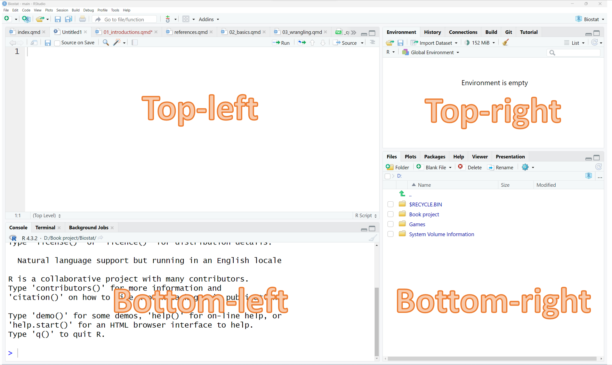
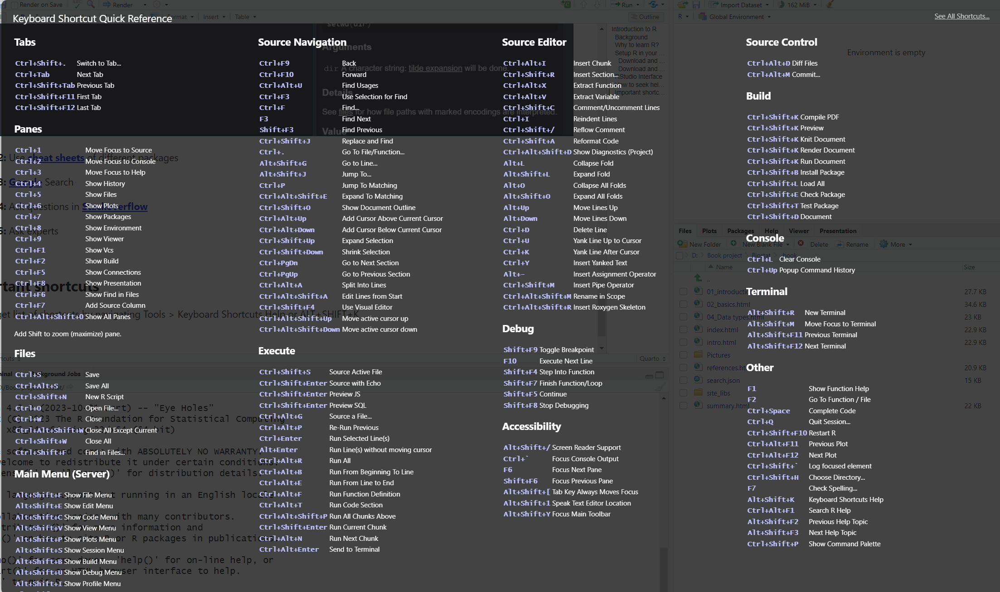

Introduction to R
Background
R originated in the early 1990s as a free and open-source alternative to the commercial statistical programming language S-PLUS. It was created by Ross Ihaka and Robert Gentleman at the University of Auckland, New Zealand. After two years in 1993 the R was made public and its development continued with contributions from various researchers and statisticians globally. In 1995, Martin Mächler played a significant role in convincing Ross Ihaka and Robert Gentalman to adopt GNU General Public License, making R free software(Ihaka, n.d.a) . Over the years, R has evolved into a powerful tool for statistical computing, data analysis, and visualization, with thousands of packages available for various tasks. Its active development, frequent releases, and robust graphics capabilities have contributed to its widespread adoption across industry, academia, and research. Today, R is considered as one of the most popular languages in data science and statistical analysis(“R for Data Analysis - 1 What Is R?” n.d.; Ihaka, n.d.b).
Why to learn R?
- R is free and open source tool.
- It has large community of users.
- It is a independent platform.
- It has a robust visualization library.
- It is use in almost every industry including health, finance.
- It is hottest in trend.
- Large number of packages are available which enables users with the extensive toolkit for data manipulation, analysis and machine learning.
Setup R in your computer
R requires installation of console R and R-studio in your computer. Follow the instruction below to setup R in your computer
Download and install R
Open an internet browser and go to https://cran.r-project.org/bin/ (“The Comprehensive r Archive Network,” n.d.).
Click the required Operating system. For Windows find the link “install R for the first time” and for MacOSX click the link “macosx/”
For windows click on link “Download R for Windows”. For macOS find link with the name “R-x.x.x-arm64.pkg” or “R-x.x.x-x86_64.pkg”. Click one of them based on your macOS type
Download R executable file and save them somewhere on your computer. Run the executable file and follow the installation instructions.
Download and install RStudio.
To Install R-studio go to https://posit.co/download/rstudio-desktop/ (“RStudio IDE User Guide” 2026).
Click on “Download RStudio Desktop”, and save the executable file somewhere on your computer. Run the executable file and follow the installation instructions.
RStudio Interface
R Studio is an integrated development environment (IDE) for R. It has four main panes, top-left, top-right, bottom-left and bottom-right. Each panes has specific purpose.

Top-Left (Text editor, R-script, R-markdown, Quarto)
This is where you can write and edit script that you want to run. You can type multiple lines of code into the text editor without having each line evaluated by R. You can save and share the code! There are a few other ways to write R scripts, that may be useful in the future. (such as R-markdown, R notebooks, quarto book or making slides.)
Top-Right (Environment, History, Tutorials)
Environment: The Environment tab stores and shows all of the active objects, values, and functions (and anything else you create) during your R session. R stores both data and output from data analysis (as well as everything else) in objects. Once you create an object, it should appear in the RStudio Environment pane.
History: You can explore your history if you’ve lost a command or variable that you want back. It’s searchable to make finding that missing command super easy!
Tutorials: You can get tutorials on R in this section.
Bottom-left (R Console)
The R console is the pane where R is waiting for us to tell it what to do, and where it will show the results of the commands. We can type directly into console, but they will be forgotten once we close the session.
Bottom Right
Plots: Any plots that you produce be in the “Plots” tab. It will keep a history so you can see changes as you make them.
Packages: You can download new packages by clicking Packages -> Install. You can load packages by checking them off, but this is best done in your scripts!
Help: Have a question on syntax of a command? You can look at it’s help page by searching for it. You can also poke around tutorials and FAQ.
Working Directory: Files in the working directory, you can change your working directory to anything else in the code or by going to that location and clicking More -> Set as Directory.
Important shortcuts
You can get list of important shortcuts by navigating Tools > Keyboard Shortcuts Help or ALT+SHIFT+K Shortcut keys can help to efficient coding.

# RStudio Keyboard Shortcuts (Windows/Linux)File Management
| Shortcut | Action |
|---|---|
Ctrl+N |
New Script |
Ctrl+Shift+N |
New R Script |
Ctrl+O |
Open File |
Ctrl+S |
Save |
Ctrl+Alt+S |
Save All |
Ctrl+Shift+W |
Close All |
Ctrl+W |
Close Current File |
Ctrl+Shift+F4 |
Close All Except Current |
Ctrl+P |
Open File Quickly |
Running Code
| Shortcut | Action |
|---|---|
Ctrl+Enter |
Run Current Line/Selection |
Alt+Enter |
Run Without Moving Cursor |
Ctrl+Alt+R |
Run All |
Ctrl+Alt+B |
Run from Beginning to Cursor |
Ctrl+Alt+E |
Run from Cursor to End |
Ctrl+Alt+F |
Run Current Function |
Ctrl+Alt+T |
Run Current Section |
Ctrl+Shift+Enter |
Source Current Script |
Ctrl+Shift+S |
Source Active File |
Ctrl+Alt+Enter |
Send to Terminal |
R Markdown / Quarto
| Shortcut | Action |
|---|---|
Ctrl+Alt+I |
Insert Code Chunk |
Ctrl+Shift+K |
Render / Knit Document |
Ctrl+Shift+F10 |
Restart R Session |
Ctrl+Shift+C |
Comment / Uncomment Lines |
Code Editing
| Shortcut | Action |
|---|---|
Tab |
Autocomplete |
Ctrl+Space |
Code Completion |
Ctrl+Shift+A |
Reformat Code |
Ctrl+D |
Delete Line |
Ctrl+Z |
Undo |
Ctrl+Shift+Z |
Redo |
Ctrl+C |
Copy |
Ctrl+X |
Cut |
Ctrl+V |
Paste |
Ctrl+A |
Select All |
Ctrl+Y |
Insert Previously Yanked Text |
Ctrl+K |
Yank Line After Cursor |
Ctrl+U |
Delete Line |
Ctrl+Shift+M |
Insert Pipe %>% |
Ctrl+Alt+Shift+M |
Insert Native Pipe |> |
Ctrl+Alt+- |
Assignment Operator <- |
Multi-Cursor Editing
| Shortcut | Action |
|---|---|
Ctrl+Alt+Up |
Add Cursor Above |
Ctrl+Alt+Down |
Add Cursor Below |
Ctrl+Alt+Shift+Up |
Expand Selection |
Ctrl+Alt+Shift+Down |
Shrink Selection |
Folding Code
| Shortcut | Action |
|---|---|
Alt+L |
Collapse Fold |
Alt+Shift+L |
Expand Fold |
Alt+O |
Collapse All Folds |
Alt+Shift+O |
Expand All Folds |
Console
| Shortcut | Action |
|---|---|
Ctrl+Up |
Command History |
Esc |
Interrupt Running Code |
Ctrl+L |
Clear Console |
Ctrl+Shift+F10 |
Restart R |
Debugging
| Shortcut | Action |
|---|---|
Shift+F9 |
Toggle Breakpoint |
F10 |
Step Over |
Shift+F4 |
Step Into |
Shift+F7 |
Finish Function |
Shift+F5 |
Continue |
Shift+F8 |
Stop Debugging |
Tabs
| Shortcut | Action |
|---|---|
Ctrl+Shift+. |
Switch to Last Tab |
Ctrl+Tab |
Next Tab |
Ctrl+Shift+Tab |
Previous Tab |
Ctrl+Shift+F11 |
First Tab |
Ctrl+Shift+F12 |
Last Tab |
Terminal
| Shortcut | Action |
|---|---|
Alt+Shift+R |
New Terminal |
Alt+Shift+M |
Focus Terminal |
Alt+Shift+F11 |
Previous Terminal |
Alt+Shift+F12 |
Next Terminal |
Build
| Shortcut | Action |
|---|---|
Ctrl+Shift+K |
Compile PDF / Knit / Render |
Ctrl+Shift+B |
Install Package |
Ctrl+Shift+L |
Load All |
Ctrl+Shift+E |
Check Package |
Ctrl+Shift+T |
Test Package |
Ctrl+Shift+D |
Document Package |
Git / Version Control
| Shortcut | Action |
|---|---|
Ctrl+Alt+D |
Diff |
Ctrl+Alt+M |
Commit |
Help
| Shortcut | Action |
|---|---|
F1 |
Help |
Ctrl+Alt+F1 |
Search Help |
F7 |
Spell Check |
Alt+Shift+K |
Keyboard Shortcuts |
Ctrl+Shift+P |
Command Palette |
Useful R Operators
| Shortcut | Inserts |
|---|---|
Alt+- |
<- |
Ctrl+Shift+M |
%>% or``|> |
Most Frequently Used Shortcuts
| Shortcut | Purpose |
|---|---|
Ctrl+Enter |
Run code |
Ctrl+Shift+Enter |
Source script |
Ctrl+Shift+K |
Render Quarto/R Markdown |
Ctrl+Shift+C |
Comment/Uncomment |
Ctrl+Shift+M |
Pipe %>% or |> |
Ctrl+Space |
Autocomplete |
Ctrl+L |
Clear Console |
Ctrl+Shift+F10 |
Restart R |
Ctrl+F |
Find |
Ctrl+Shift+F |
Find in Files |
Ctrl+. |
Go to File/Function |
Ctrl+Alt+I |
Insert Code Chunk |